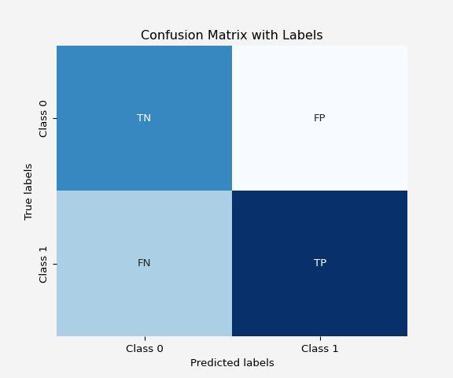

Artificial Neural Network (ANN) - Classification 1
4 min
Tuesday, March 25, 2025
In any classification problem, the goal is to build a model that accurately predicts labels or classes from input data. Once the model is built, it is important to evaluate its performance using a variety of metrics. Some of the most commonly used metrics are the confusion matrix, accuracy, precision, recall, F1 score, and ROC-AUC curve. This post will explain each metric and show how to compute them using real data in Python.
A confusion matrix is a tabular summary of the performance of a classification algorithm. It shows the number of correct and incorrect predictions broken down by each class.
For a binary classification, the confusion matrix looks like this:
import matplotlib.pyplot as plt
import seaborn as sns
import numpy as np
def plot_confusion_matrix():
matrix_data = np.array([[100, 5], [10, 50]])
extended_matrix = np.zeros((3, 3))
extended_matrix[:2, :2] = matrix_data
mask = np.zeros_like(extended_matrix, dtype=bool)
mask[2,:] = True
mask[:,2] = True
# Create a plot
fig, ax = plt.subplots(figsize=(8, 5.2))
fig.patch.set_facecolor('#f4f4f4')
ax.set_facecolor('#f4f4f4')
sns.heatmap(extended_matrix, mask=mask,annot=False, cmap="RdYlGn", cbar=False, ax=ax, linewidths=2, linecolor='black')
# Add the original confusion matrix values (True Positive, False Negative, etc.)
ax.text(0.4, 0.3, 'True Positive (TP)', ha='center', va='center', fontsize=12, color="white")
ax.text(1.45, 0.3, 'False Negative (FN)', ha='center', va='center', fontsize=12, color="white")
ax.text(1.45, 0.60, '(Type II Error)', ha='center', va='center', fontsize=12, color="white")
ax.text(0.45, 1.25, 'False Positive (FP)', ha='center', va='center', fontsize=12, color="white")
ax.text(0.45, 1.40, '(Type I Error)', ha='center', va='center', fontsize=12, color="white")
ax.text(1.45, 1.4, 'True Negative (TN)', ha='center', va='center', fontsize=12, color="red")
ax.text(0.4, -0.1, 'Positive', ha='center', va='center', fontsize=12)
ax.text(1.45, -0.1, 'Negative', ha='center', va='center', fontsize=12)
ax.text(1, -0.3, 'Predicted Class', ha='center', va='center', fontsize=14)
# Add Precision and NPV in the bottom row of the confusion matrix
ax.text(0.17, 0.2, r'Precision= $\frac{TP}{TP + FP}$', ha='center', va='center', transform=ax.transAxes, fontsize=12)
ax.text(0.5, 0.2, r'NPV= $\frac{TN}{TN + FN}$', ha='center', va='center', transform=ax.transAxes, fontsize=12)
# Add Sensitivity and Specificity in the right column of the confusion matrix
ax.text(0.83, .95, r'TPR=Sensitivity= $\frac{TP}{TP + FN}$', ha='center', va='center', transform=ax.transAxes, fontsize=12)
ax.text(0.83, .89, 'or Recall', ha='center', va='center', transform=ax.transAxes, fontsize=12)
ax.text(0.83, .8, 'False Neg. Rate (FNR)', ha='center', va='center', transform=ax.transAxes, fontsize=12)
ax.text(0.83, .75, r'Type II Error rate= $\frac{FN}{TP + FN}$', ha='center', va='center', transform=ax.transAxes, fontsize=12)
ax.text(0.83, .6, r'TNR=Specificity= $\frac{TN}{TN + FP}$', ha='center', va='center', transform=ax.transAxes, fontsize=12)
ax.text(0.83, .48, 'False Positive Rate', ha='center', va='center', transform=ax.transAxes, fontsize=12)
ax.text(0.83, .43, r'FPR= $\frac{FP}{TN + FP}$', ha='center', va='center', transform=ax.transAxes, fontsize=12)
ax.text(0.83, .37, 'Type I Error Rate', ha='center', va='center', transform=ax.transAxes, fontsize=12)
# Add Accuracy in the bottom-right corner of the extended grid
ax.text(0.83, 0.2, r'Accuracy= $\frac{TP + TN}{TP+TN+FP+FN}$', ha='center', va='center', transform=ax.transAxes, fontsize=12)
# Titles and labels
ax.set_ylabel('Actual Class', fontsize=14)
# Set tick labels for actual and predicted
ax.xaxis.set_ticklabels([' ', ' ', ''], fontsize=12)
ax.yaxis.set_ticklabels(['Positive', 'Negative', ''], fontsize=12, rotation=0)
plt.tight_layout()
plt.savefig('conf.png')
plt.show()
# Generate the confusion matrix plot
plot_confusion_matrix()Accuracy is the ratio of correctly predicted observations to the total observations.
\[ \text{Accuracy} = \frac{TP + TN}{TP + TN + FP + FN} \]
It is one of the most intuitive metrics, but it can be misleading if the classes are imbalanced.
Precision measures the proportion of positive predictions that are actually correct.
\[ \text{Precision} = \frac{TP}{TP + FP} \]
It is useful when the cost of a false positive is high, such as in fraud detection.
Recall measures the proportion of actual positives that are correctly predicted.
\[ \text{Recall} = \frac{TP}{TP + FN} \]
It is important in cases where missing a positive is more costly, like in medical diagnoses.
The F1 score is the harmonic mean of precision and recall, giving a balanced measure when both metrics are important.
\[ \text{F1 Score} = 2 \times \frac{\text{Precision} \times \text{Recall}}{\text{Precision} + \text{Recall}} \]
The ROC-AUC curve helps visualize the performance of a classification model by plotting the true positive rate (recall) against the false positive rate (1 - specificity) at various threshold settings. The AUC (Area Under the Curve) gives a single number that summarizes the performance. A model with an AUC of 1 is perfect, while a model with an AUC of 0.5 is as good as random guessing.
| Metric | Formula |
|---|---|
| Precision: | \(\frac{TP}{TP+FP}\) |
| Sensitivity or Recall or True Positive Rate (TPR): | \(\frac{TP}{TP+FN}\) |
| Type II Error Rate or False Negative Rate (FNR): | \(\frac{FN}{FN+TP}\) |
| Sepecificity or Selectivity or True Negative Rate (TNR): | \(\frac{TN}{TN+FP}\) |
| Type I Error Rate or False Positive Rate (FPR): | \(\frac{FP}{FP+TN}\) |
| Total Error Rate: | \(\frac{FP+FN}{TN+TP+FN+FP}\) |
| Accuracy: | \(\frac{TP+TN}{TN+TP+FN+FP}\) |
Let’s use a real dataset and compute these metrics using Python. In python the actual confusion matrix looks like this

We’ll use the breast cancer dataset from sklearn, which is a binary classification problem where the task is to predict whether a tumor is malignant or benign.
import pandas as pd
from sklearn.datasets import load_breast_cancer
from sklearn.model_selection import train_test_split
from sklearn.ensemble import RandomForestClassifier
from sklearn.metrics import confusion_matrix, accuracy_score, precision_score, recall_score, f1_score, roc_auc_score, roc_curve
# Load dataset
data = load_breast_cancer()
X = data.data
y = data.target
# Split data into training and test sets
X_train, X_test, y_train, y_test = train_test_split(X, y, test_size=0.3, random_state=42)
# Train a RandomForest Classifier
clf = RandomForestClassifier(random_state=42)
clf.fit(X_train, y_train)
# Make predictions
y_pred = clf.predict(X_test)
y_pred_proba = clf.predict_proba(X_test)[:, 1]
# Compute the confusion matrix
cm = confusion_matrix(y_test, y_pred)
# Plot confusion matrix
plt.figure(figsize=(8,5))
sns.heatmap(cm, annot=True, fmt='d', cmap='Blues', xticklabels=['Predicted Benign', 'Predicted Malignant'], yticklabels=['Actual Benign', 'Actual Malignant'])
plt.xlabel('Predicted')
plt.ylabel('Actual')
plt.title('Confusion Matrix')
plt.gcf().patch.set_facecolor('#f4f4f4')
plt.gca().set_facecolor('#f4f4f4')
plt.show()Next, Compute Accuracy, Precision, Recall, F1 Score, ROC-AUC
tn = cm[0,0]
fp = cm[0,1]
fn = cm[1,0]
tp = cm[1,1]
accuracy1 = np.round(accuracy_score(y_test, y_pred),4)
accuracy2 = np.round(((tp+tn)/(tp+tn+fp+fn)),4)
precision1 = np.round(precision_score(y_test, y_pred),4)
precision2 = np.round(((tp)/(tp+fp)),4)
recall1 = np.round(recall_score(y_test, y_pred),4)
recall2 = np.round(((tp)/(tp+fn)),4)
f1_1 = np.round(f1_score(y_test, y_pred),4)
f1_2 = np.round((2*precision2*recall2)/(precision2+recall2),4)
roc_auc = roc_auc_score(y_test, y_pred_proba)
print('Accuracy Using Library = {}, and Accuracy Using Formula = {}'.format(accuracy1,accuracy2))
print('Precision Using Library = {}, and Precision Using Formula = {}'.format(precision1,precision2))
print('Recall Using Library = {}, and Recall Using Formula = {}'.format(recall1,recall2))
print('F1 Score Using Library = {}, and F1 Score Using Formula = {}'.format(f1_1,f1_2))
print(f'ROC-AUC score={roc_auc:.4f}')Plot ROC curve. ROC curve is found from plotting True Positive Rate (TPRs) against False Positive Rate (FPRs) for different cutoffs of probability values. To plot the ROC curve using the built-in function from sklearn we do the following:
fpr, tpr, thresholds = roc_curve(y_test, y_pred_proba)
plt.figure(figsize=(8,5))
plt.plot(fpr, tpr, color='blue', label=f'ROC Curve (AUC = {roc_auc:.4f})')
plt.plot([0, 1], [0, 1], color='red', linestyle='--')
plt.xlabel('False Positive Rate')
plt.ylabel('True Positive Rate')
plt.title('ROC Curve')
plt.legend()
plt.gcf().patch.set_facecolor('#f4f4f4')
plt.gca().set_facecolor('#f4f4f4')
plt.show()To build our own
cutoff_values = np.arange(0,0.99,0.001)
true_pos_rates = []
false_pos_rates = []
for cutoff in cutoff_values:
prediction = 1*(clf.predict_proba(X_test)[:,1] >= cutoff)
conf_matrix = confusion_matrix(y_test, prediction)
tn = conf_matrix[0,0]
fp = conf_matrix[0,1]
fn = conf_matrix[1,0]
tp = conf_matrix[1,1]
true_pos_rates.append(tp/(tp+fn))
false_pos_rates.append(fp/(fp+tn))
plt.figure(figsize=(8,5))
plt.plot(false_pos_rates, true_pos_rates, color='blue', label=f'ROC Curve (AUC = {roc_auc:.4f})')
plt.plot([0, 1], [0, 1], color='red', linestyle='--')
plt.xlabel('False Positive Rate')
plt.ylabel('True Positive Rate')
plt.title('ROC Curve')
plt.legend()
plt.gcf().patch.set_facecolor('#f4f4f4')
plt.gca().set_facecolor('#f4f4f4')
plt.show()Next, precision-recall score
cutoff_values = np.arange(0,0.99,0.001)
precisions = []
recalls = []
for cutoff in cutoff_values:
prediction = 1*(clf.predict_proba(X_test)[:,1] >= cutoff)
precisions.append(precision_score(y_test, prediction))
recalls.append(recall_score(y_test, prediction))
plt.figure(figsize=(8,5))
plt.plot(recalls, precisions, color='blue')
plt.plot([0, 1], [0, 1], color='red', linestyle='--')
plt.xlabel('Recalls')
plt.ylabel('Precisions')
plt.title('Precision-Recall Curve')
plt.legend()
plt.gcf().patch.set_facecolor('#f4f4f4')
plt.gca().set_facecolor('#f4f4f4')
plt.show()Confusion Matrix: The heatmap shows the number of true positives, false positives, true negatives, and false negatives, which gives a detailed insight into the model’s performance.
Accuracy: This value tells us the overall correctness of the model. It may not always be reliable if the data is imbalanced.
Precision: A higher precision indicates fewer false positives. In this dataset, it tells us how well the model identifies malignant tumors correctly.
Recall: A higher recall indicates fewer false negatives. This is particularly important in medical settings where missing a positive case (malignant tumor) can be dangerous.
F1 Score: The F1 score balances precision and recall, especially when the class distribution is uneven.
ROC-AUC Curve: The ROC curve gives a visualization of the trade-off between sensitivity and specificity. The AUC gives a single number summarizing the overall ability of the model to distinguish between classes.
It’s important to explain when to prioritize specific metrics based on the problem context:
Accuracy: Use when classes are balanced and misclassification costs are similar across classes. Avoid if the dataset is imbalanced.
Precision: Useful when false positives are costly. For example, in spam detection, it’s better to have a few missed spams than to mark important emails as spam.
Recall: Use when false negatives are costly. In medical diagnoses (e.g., cancer detection), it’s crucial to minimize missed positive cases (false negatives).
F1 Score: Best when you need a balance between precision and recall, especially with imbalanced classes.
ROC-AUC: Useful for evaluating how well your model separates the two classes across various thresholds. Works well when you want an overall measure of performance.
For classification problems, the decision threshold is crucial, especially for metrics like ROC-AUC. Often, models use a default threshold of 0.5 to classify whether an instance belongs to the positive class or not, but you can adjust this threshold to prioritize recall over precision or vice versa. You could add a section showing how adjusting the threshold can change model performance.
Here’s an additional Python example showing how to adjust thresholds:
# Adjust threshold
threshold = 0.4
y_pred_thresholded = (y_pred_proba >= threshold).astype(int)
# Recompute metrics
new_precision = precision_score(y_test, y_pred_thresholded)
new_recall = recall_score(y_test, y_pred_thresholded)
new_f1 = f1_score(y_test, y_pred_thresholded)
print(f'New Precision: {new_precision:.4f}')
print(f'New Recall: {new_recall:.4f}')
print(f'New F1 Score: {new_f1:.4f}')This shows that the default threshold isn’t set in stone, and adjusting it can significantly affect precision, recall, and other metrics.
Class imbalance can skew metrics like accuracy. A discussion on how to handle imbalance through methods such as resampling (oversampling/undersampling) or using techniques like SMOTE (Synthetic Minority Over-sampling Technique) could provide further depth.
For example:
from imblearn.over_sampling import SMOTE
# Handling class imbalance using SMOTE
smote = SMOTE(random_state=42)
X_resampled, y_resampled = smote.fit_resample(X_train, y_train)
# Retrain the model on resampled data
clf_resampled = RandomForestClassifier(random_state=42)
clf_resampled.fit(X_resampled, y_resampled)
# Predictions and metrics
y_pred_resampled = clf_resampled.predict(X_test)
accuracy_resampled = accuracy_score(y_test, y_pred_resampled)
precision_resampled = precision_score(y_test, y_pred_resampled)
recall_resampled = recall_score(y_test, y_pred_resampled)
print(f'Resampled Accuracy: {accuracy_resampled:.4f}')
print(f'Resampled Precision: {precision_resampled:.4f}')
print(f'Resampled Recall: {recall_resampled:.4f}')This demonstrates the effect of handling class imbalance on model performance.
While the ROC curve is useful, the Precision-Recall (PR) curve is often more informative when dealing with imbalanced datasets because it focuses on the performance of the positive class. Including a section on this can enhance the evaluation process.
from sklearn.metrics import precision_recall_curve
# Compute Precision-Recall curve
precision_vals, recall_vals, _ = precision_recall_curve(y_test, y_pred_proba)
# Plot Precision-Recall curve
plt.figure(figsize=(8, 5))
plt.plot(recall_vals, precision_vals, marker='.')
plt.xlabel('Recall')
plt.ylabel('Precision')
plt.title('Precision-Recall Curve')
plt.gcf().patch.set_facecolor('#f4f4f4')
plt.gca().set_facecolor('#f4f4f4')
plt.show()The PR curve shows how precision and recall change with different classification thresholds.
Cohen’s Kappa measures agreement between observed accuracy and expected accuracy.
Matthews Correlation Coefficient (MCC) provides a balanced metric even when classes are imbalanced. It considers true and false positives and negatives, giving a correlation-like score between predictions and actuals.
from sklearn.metrics import cohen_kappa_score, matthews_corrcoef
kappa = cohen_kappa_score(y_test, y_pred)
mcc = matthews_corrcoef(y_test, y_pred)
print(f'Cohen\'s Kappa: {kappa:.4f}')
print(f'MCC: {mcc:.4f}')Share on
You may also like
@online{islam2024,
author = {Islam, Rafiq},
title = {Model {Evaluation} and {Fine} {Tuning:} {Classification}
{Metrices}},
date = {2024-10-17},
url = {https://rispace.github.io/posts/classificationmetrics/},
langid = {en}
}